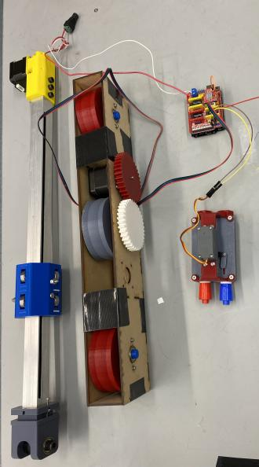
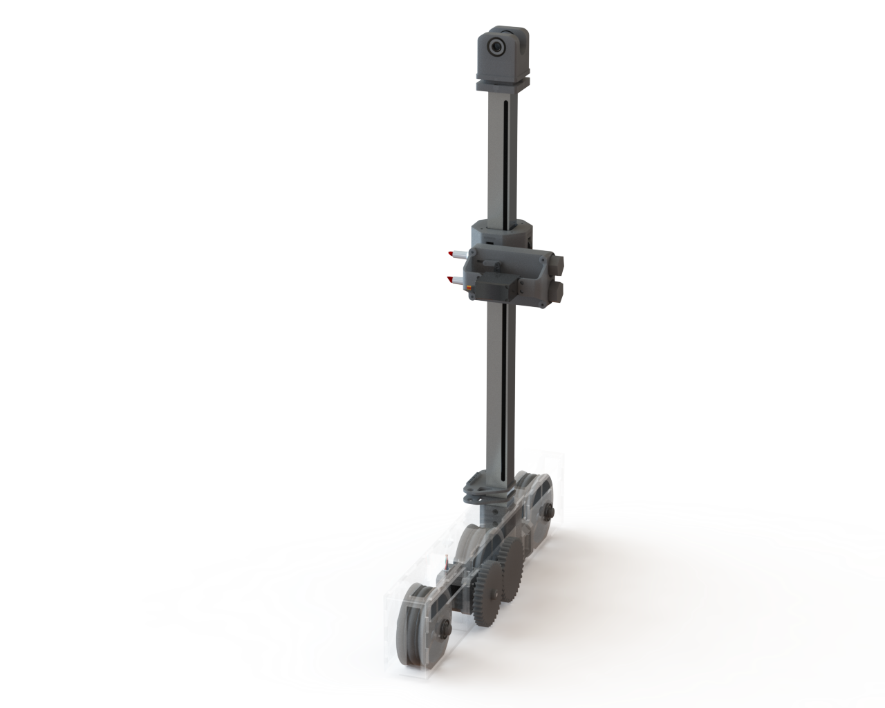
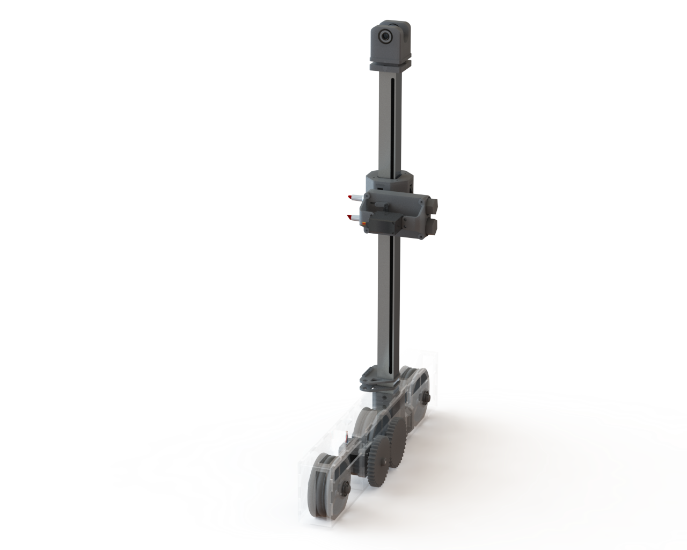

Design Sprints
See how our progress developed over the semester.
The Sprint Process
For the second half of our Priciples of Engineering course, we completed three two-week design sprints. After each sprint we would present our work to our peers and professors for feedback. The following sprint descriptions demonstrate the evolution of GREMLIN from ideation to final product.
Sprint One
Our initial design goals for sprint one were ambitious. We hoped to have a robot that traverses across the whiteboard with a stationary vertical axis and stationary marker. As we began the project, however, we realized the intricacies of the design and decided to focus on the three components of our mechanical system individually. This pivot had us working on the preliminary designs of the chassis, marker actuator, and gantry system design.
| The first design sprint was very mechanical heavy. This team worked on the construction and testing of the chassis, marker actuator, and gantry system's initial design. | The electrical team specced out the parts necessary to drive the motors. They also designed basic stepper motor and servo circuits, which allowed for the preliminary testing of mechanical components. | The software team focused on developing stepper and servo motor test code capable of controlling a stepper and servo at the same time. This allowed for preliminary testing of mechanical and electrical integration. |
- 
-


Sprint Two
For sprint two, we hoped to assemble the three parts we designed in the first sprint into a single robot that traversed the whiteboard with a working vertical axis and working marker actuator. We also wanted to iterate upon our last design by including more traction for the wheels, designing a more compact electrical implementation, developing code that reliably moves the robot to a given x and y position with one color, and beginning image to array conversion and mapping.
| This team met its goal of building a full assembly of all three mechanical systems. This allowed them to figure out precision of vertical gantry, marker actuator, and drive base. During testing, they discovered that the classroom whiteboards are not flat surfaces. This warping prevented a guarantee of marker-whiteboard contact. This inspired redesign for the marker actuator, now using springs to implement compliance with the variations in the whiteboard. |
The electrical team pivoted to developing a wireless application after an unforeseen stress test; excessive wire length proved to be unwieldly and hazardous. To address this, they specced out a 11.1V battery. Trial runs also revealed issues with the marker actuator overrunning the constraints of the y-axis. To prevent damage to the motors, limit switches were ordered. |
The software team spent sprint two researching and developing code to divide photos into white, red, and blue pixels. They also hardcoded shapes for testing the design changes made by the mechanical team, which helped identify the board warping issue. Finally, they filtered images to extract the borders and created simple dot drawings from images. |
-
 
 -

Sprint Three
For Sprint Three, our main priorities were to tune the springs in the marker actuator, build enclosures for all electronics, integrate the 12V battery into our electrical system, efficiently manage wires and components, and finalize our electrical schematic. Additionally, we were able to produce dot and line drawings from user-inputted images and start testing our fully integrated system.
| In this sprint, the mechanical team redesigned the drive base, marker actuator, chassis, and board sliders. We also designed the snap on electronics enclosure and implemented limit switches for the ends of the Y axis. | The electrical team completed all wire management systems. This procedure included soldering all wires where we previously used jumper cables and rearranging wires and components to prevent any failures due to wire interference. We also received a XT60 plug connector to use to charge our 12V battery. Additionally, we began implementing the 12V battery and both limit switches. We were also able to finalize our electrical schematic. | The software team was able to filter user-inputted images into a script to extract borders, create simple dot drawings from images, produce hardcoded shape drawings, shorten creation time, and reduce issues with markers running dry. |